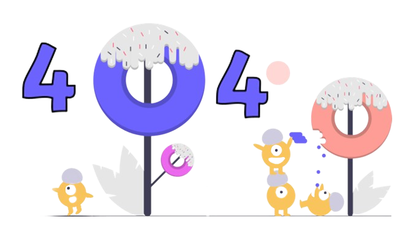

Page Not Found
It's looking like you may have taken a wrong turn. Don't worry... it happens to the best of us. Here's a little tip that might help you get back on track.
Return HomeIt's looking like you may have taken a wrong turn. Don't worry... it happens to the best of us. Here's a little tip that might help you get back on track.
Return Home